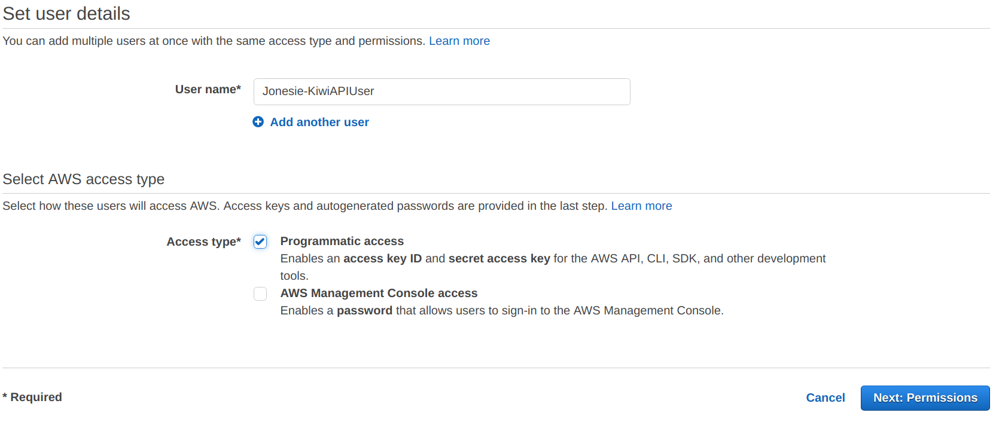
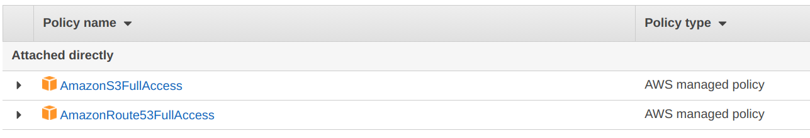
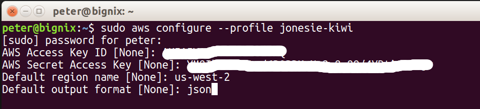
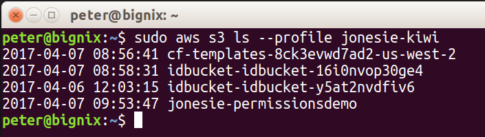

In the last few weeks I've been spending a lot of time learning Amazon Web Service, Docker, DynamoDB, .Net Core and more. I've decided to document my discoveries by means of a new blog site. Here's the plan:
Initially, this site is going to look pretty fugly.
So, here we go :)
My home desktop machine died recently (faultly hard drive) so I decided to start with a clean slate and install Linux. Im using the standard Ubuntu 16.10 LTS distro. I tried a few distro's like Mint and Budgie but my choices are constrained by the platforms that .Net Core supports.
Installation of Ubuntu was complicated by my graphics card not being supported by the installers. This required the use of the nomodeset parameter when installing and after the 1st reboot. Once I got past this, I was able to install the correct NVidia drivers and get a nice looking desktop.
Next I installed a bunch of stuff. This couldn't be easier:
I also installed a bunch of extensions in Visual Studio Code:
I already had an AWS account for using free-tier resources while training myself. I want to resist creating anything in the AWS console and use code and script as much as possible. However, I do need to use the console to create an IAM account.
We only want this user to have progrmmatic access - no need for the console.
Next, set the permissions:
I am only using S3 and Route53 for now. I'll add more permissions later if required.
Next, save the IAM credentials somewhere safe and setup these in a local configuration. There are several ways to do this - I prefer to use a named profile rather than environment variables.I can use this profile with the AWS CLI and Terraform:
And now I can test this works:
I will use Terraform to create the S3 buckets for the site. The site actually requires 3 buckets:
There is a step by step walkthough here that explains how to setup the buckets.
In case you don't know, Terraform is a pretty nifty tool for creating all(?) types of AWS resources. In my case, I just need S3 buckets with the Web Site feature enabled and Route 53 (DNS) pointing to this. The Terraform script for this looks like this:
resources.tf
provider "aws" {
region = "${var.aws_region}"
profile = "${var.aws_profile}"
}
resource "aws_s3_bucket" "sitebucket" {
bucket = "${var.site_bucket_name}"
acl = "public-read"
website {
index_document = "index.html"
error_document = "error.html"
}
logging {
target_bucket = "${aws_s3_bucket.sitebucket-log.id}"
target_prefix = "log/"
}
policy = <<EOF
{
"Version":"2012-10-17",
"Statement": [{
"Sid": "Allow Public Access to All Objects",
"Effect": "Allow",
"Principal": "*",
"Action": "s3:GetObject",
"Resource": "arn:aws:s3:::${var.site_bucket_name}/*"
}
]
}
EOF
}
resource "aws_s3_bucket" "sitebucket-log" {
bucket = "logs.${var.site_bucket_name}"
acl = "log-delivery-write"
lifecycle_rule {
id = "log"
prefix = "log/"
enabled = true
expiration {
days = 30
}
}
}
resource "aws_s3_bucket" "sitebucket-www" {
bucket = "www.${var.site_bucket_name}"
acl = "public-read"
website {
redirect_all_requests_to = "${var.site_bucket_name}"
}
}
data "aws_route53_zone" "zone" {
name = "${var.domain_name}"
}
resource "aws_route53_record" "siteroot" {
zone_id = "${data.aws_route53_zone.zone.zone_id}"
name = "${var.domain_name}"
type = "A"
alias {
name = "${aws_s3_bucket.sitebucket.website_domain}"
zone_id = "${aws_s3_bucket.sitebucket.hosted_zone_id}"
evaluate_target_health = false
}
}
resource "aws_route53_record" "sitewww" {
zone_id = "${data.aws_route53_zone.zone.zone_id}"
name = "www.${var.domain_name}"
type = "A"
alias {
name = "${aws_s3_bucket.sitebucket.website_domain}"
zone_id = "${aws_s3_bucket.sitebucket.hosted_zone_id}"
evaluate_target_health = false
}
}
variables.tf
variable "aws_profile" {}
variable "aws_region" {}
variable "site_bucket_name" {}
I placed the above two files in a directory called aws. Then I created a shell script to apply this:
deploy.sh
#!/bin/bash
echo Deploy static site to jonesie.kiwi
aws_profile="jonesie-kiwi"
aws_region="us-west-2"
domain_name="jonesie.kiwi"
site_bucket_name="jonesie.kiwi"
site_bucket_url="http://$site_bucket_name.s3-website-$aws_region.amazonaws.com"
# create the aws infrastructure
terraform apply \
-var "aws_profile=$aws_profile" \
-var "aws_region=$aws_region" \
-var "domain_name=jonesie.kiwi" \
-var "site_bucket_name=$site_bucket_name" \
aws
# copy the content to the bucket
if [ $? -eq 0 ]
then
aws s3 cp \
content/ s3://$site_bucket_name \
--profile $aws_profile \
--recursive
fi
Now I can run the script, remembering to SUDO of course.
The final step is to update my domain registry with the AWS name server records. This is a manual step as I cant script this.
Creating blog posts in raw HTML is pretty tedious so I think I'll work on a front end UI next. I should be able to create some javascript that uses S3 as a back end 'database'. I'd like to know if anyone if reading this :) There's no way of sending me feedback other than by emailing me (peter@jonesie.net.nz). I have also posted the code to github - https://github.com/Jonesie/staticweb